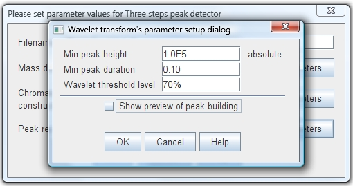
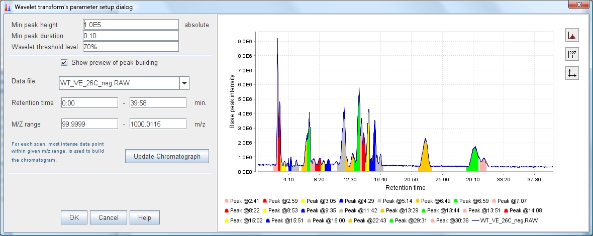

This mass detector uses the Mexican Hat wavelet, same implementation as
Wavelet mass detector.
The recognition of chormatographic peaks is executed in three steps. First converts the
original intensity of data points into wavelet domain. Next calculates the threshold level,
taking the "Wavelet threshold level" value to calculate the quantile from the wavelet's intensities. And finally
uses the calculated threshold to identfy true chromatographic peaks.
|
|
The difference with the Wavelet mass detector (algorithm implemented) is that this method does not require the user define the
"Scale level" for the wavelet. The scale level is determined automatically. The algorithm
looks for a wavelet with an intensity just bigger than the chromatogram's intensity, until that point
the algorithm calculates the wavelet again with a bigger scale each time. Actually the method just calculates until scale
level 100, due must of the chromatograms are resolved with a scale less than 20.
This mass detector is recommended for raw data with low resolution.
This recognizer uses a three parameters:
"Min peak height"
This value sets the minimum acceptable height (intensity) for a chromatographic peak.
"Min peak duration"
This value sets the minimum acceptable length (time duration) for a chromatographic peak.
"Wavelet threshold level"
This value sets the quantile level to calculate the wavelet threshold.
| Parameter setup dialog  |
|
Spectrum plot showing detected peaks  |